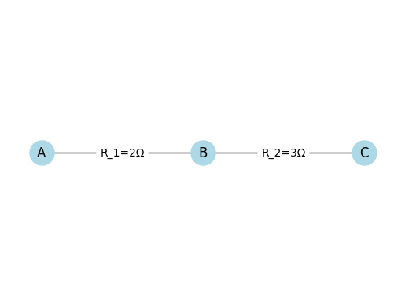
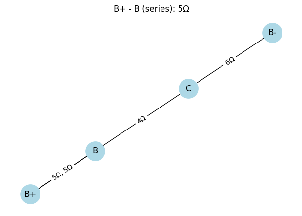

Problem 1
ü߆ Equivalent Resistance Using Graph Theory
üìå Introduction
Calculating equivalent resistance is a fundamental task in electrical engineering. For complex circuits, it’s easier to analyze them using graph theory, where: - Nodes represent connection points. - Edges represent resistors with weights equal to resistance values.
Graph representation enables: - Automated calculations. - Handling of nested configurations. - Clear visualizations.
üîó Series Connection
Resistors are connected end-to-end. Current is the same through all; voltages add up.
Formula:
Visualization in Python (Colab compatible):

import networkx as nx
import matplotlib.pyplot as plt
G = nx.Graph()
G.add_edge("1", "2", label="R1")
G.add_edge("2", "3", label="R2")
G.add_edge("3", "4", label="R3")
pos = {"1": (0,0), "2": (1,0), "3": (2,0), "4": (3,0)}
nx.draw_networkx_nodes(G, pos, node_color='lightblue', node_size=500)
nx.draw_networkx_labels(G, pos)
edge_labels = {(u, v): d['label'] for u, v, d in G.edges(data=True)}
nx.draw_networkx_edges(G, pos)
nx.draw_networkx_edge_labels(G, pos, edge_labels=edge_labels)
plt.axis('off')
plt.show()
ü™Ñ Parallel Connection
Resistors are connected between the same two nodes. Voltage is the same across them; currents add up.
Formula:

import networkx as nx
import matplotlib.pyplot as plt
G = nx.MultiGraph()
G.add_edge("A", "B", label="R1")
G.add_edge("A", "B", label="R2")
pos = {"A": (0,0), "B": (2,0)}
nx.draw_networkx_nodes(G, pos, node_color='lightblue', node_size=500)
nx.draw_networkx_labels(G, pos)
nx.draw_networkx_edges(G, pos, edgelist=[("A", "B")], connectionstyle="arc3,rad=0.2")
nx.draw_networkx_edges(G, pos, edgelist=[("A", "B")], connectionstyle="arc3,rad=-0.2")
plt.text(1, 0.2, "R1", horizontalalignment='center')
plt.text(1, -0.2, "R2", horizontalalignment='center')
plt.axis('off')
plt.show()
üîó Example 1: Simple Series
Given:
\(R_1 = 2\,\Omega\), \(R_2 = 3\,\Omega\), \(R_3 = 5\,\Omega\)
Solution:
Visualization:

import networkx as nx
import matplotlib.pyplot as plt
# Простая серия двух резисторов: R1=2Ω, R2=3Ω
G = nx.Graph()
G.add_edge("A", "B", label="R_1=2Ω")
G.add_edge("B", "C", label="R_2=3Ω")
pos = {"A": (0,0), "B": (1,0), "C": (2,0)}
nx.draw_networkx_nodes(G, pos, node_color='lightblue', node_size=500)
nx.draw_networkx_labels(G, pos)
edges = G.edges(data=True)
edge_labels = { (u, v):d['label'] for u,v,d in edges }
nx.draw_networkx_edges(G, pos)
nx.draw_networkx_edge_labels(G, pos, edge_labels=edge_labels)
plt.axis('off')
plt.show()
⚡ Example 2: Simple Parallel
Given:
\(R_1 = 4\,\Omega\), \(R_2 = 6\,\Omega\)
Solution:
Visualization:
import networkx as nx
import matplotlib.pyplot as plt
G = nx.MultiGraph()
G.add_edge("A", "B", label="4Ω")
G.add_edge("A", "B", label="6Ω")
pos = {"A": (0,0), "B": (2,0)}
nx.draw_networkx_nodes(G, pos, node_color='lightblue', node_size=500)
nx.draw_networkx_labels(G, pos)
nx.draw_networkx_edges(G, pos, edgelist=[("A", "B")], connectionstyle="arc3,rad=0.2")
nx.draw_networkx_edges(G, pos, edgelist=[("A", "B")], connectionstyle="arc3,rad=-0.2")
plt.text(1, 0.2, "4Ω", horizontalalignment='center')
plt.text(1, -0.2, "6Ω", horizontalalignment='center')
plt.axis('off')
plt.show()
üîÄ Example 3: Nested Configuration
Structure:
\(R_1\) and \(R_2\) are in series.
Their combination is in parallel with \(R_3\).
Given:
\(R_1 = 5\,\Omega\), \(R_2 = 5\,\Omega\), \(R_3 = 10\,\Omega\)
Solution:
Series:
Parallel:
Visualization:

import networkx as nx
import matplotlib.pyplot as plt
G = nx.Graph()
G.add_edge("1", "2", label="R1")
G.add_edge("2", "3", label="R2")
G.add_edge("1", "3", label="R3")
pos = {"1": (0,0), "2": (1,1), "3": (1,-1)}
nx.draw_networkx_nodes(G, pos, node_color='lightblue', node_size=500)
nx.draw_networkx_labels(G, pos)
edge_labels = {(u, v): d['label'] for u, v, d in G.edges(data=True)}
nx.draw_networkx_edges(G, pos)
nx.draw_networkx_edge_labels(G, pos, edge_labels=edge_labels)
plt.axis('off')
plt.show()
Circuit Reduction Algorithm (Pseudocode)
1. Build a graph where:
- Nodes = connection points
- Edges = resistors with resistance values
2. While the graph is not simplified:
- Look for degree-2 nodes → combine series resistors:
\(R = R_1 + R_2\)
- Look for multiple edges between two nodes → combine in parallel:
$$
\frac{1}{R} = \frac{1}{R_1} + \frac{1}{R_2} + \cdots
$$
3. Repeat until only one edge remains → equivalent resistance.
ü߆ Conclusion
Graph theory allows automated and visual circuit analysis.
Complex networks can be reduced step-by-step to one equivalent value.
Ideal for simulations, optimization tasks, and learning purposes.
---
üîå Circuits Problem: Resistor Network Simplification
⚙️ Step 1: Problem Setup
We are given a circuit represented as a graph, consisting of:
- Start terminal:
A - End terminal:
B - Intermediate nodes: multiple points connected with resistors
üéØ Goal:
Simplify the resistor network and find the equivalent resistance \(R_{\text{eq}}\) between A and B using step-by-step transformations.
Step 2: Methods of Simplification
We will use the following simplification rules:
➕ Series Combination:
Resistors in series add up:
➗ Parallel Combination:
For resistors in parallel:
üîÅ Y‚ÄìŒî Transformation:
Used when a circuit contains triangle (\(\Delta\)) or star (\(Y\)) shapes that can’t be reduced by simple rules.
ü™Ñ Step 3: Visualization of Steps
Each step shows:
- ✅ The original circuit
- üî¥ Highlighted resistors to be simplified
- üü¢ The simplified version
- üî¢ Clear numbering of each transformation
üß© Step 1: Combine A‚Äì1 and 1‚Äì3 (Series)
- Highlight:
A–1 (5Ω)and1–3 (3Ω) - These are in series, so:
- Replace with edge: A–3 (8Ω)
üß© Step 2: Combine 2‚Äì3 and A‚Äì2 (Parallel)
- Highlight:
A–2 (10Ω)and2–3 (2Ω) - Combine in parallel:
- Replace with: A–3 (1.67Ω) (after merging through node 2)
üß© Step 3: Combine in Series with 3‚Äì4 (4Œ©)
- Highlight: previous equivalent
A–3with3–4 - New resistance:
üß© Step 4: Add Path via 2‚Äì4 (1Œ©), Apply Parallel Rule
- Now we have two paths from A to 4:
A → 3 → 4(5.67Ω)A → 2 → 4(1Ω)- Combine in parallel:
üß© Step 5: Combine with 4‚ÄìB (6Œ©)
- Final series connection to B:
üì¶ Final Answer:
Equivalent Resistance between A and B:


 Equivalent Resistance (Case 1): 12.50 Ohms
Equivalent Resistance (Case 1): 12.50 Ohms
import networkx as nx
import matplotlib.pyplot as plt
def draw_graph(G, step_title):
pos = nx.spring_layout(G, seed=42)
plt.figure(figsize=(6, 4))
edge_labels = {}
for u, v, data in G.edges(data=True):
label = f"{data['resistance']}Ω"
if G.number_of_edges(u, v) > 1:
label = ', '.join(f"{d['resistance']}Ω" for d in G.get_edge_data(u, v).values())
edge_labels[(u, v)] = label
nx.draw(G, pos, with_labels=True, node_color='lightblue', node_size=800)
nx.draw_networkx_edge_labels(G, pos, edge_labels=edge_labels)
plt.title(step_title)
plt.show()
def combine_series(G):
changed = True
while changed:
changed = False
for node in list(G.nodes):
if G.degree(node) == 2 and node not in ("B+", "B-"):
neighbors = list(G.neighbors(node))
if len(neighbors) == 2:
u, v = neighbors
# Find the two edges and their resistances
edge1 = next(iter(G.get_edge_data(u, node).values()))
edge2 = next(iter(G.get_edge_data(node, v).values()))
R_new = edge1['resistance'] + edge2['resistance']
G.remove_node(node)
G.add_edge(u, v, resistance=R_new)
changed = True
draw_graph(G, f"{u} - {v} (series): {R_new}Ω")
break
def combine_parallel(G):
to_process = list(G.edges(keys=True))
seen = set()
for u, v, k in to_process:
if (u, v) in seen or (v, u) in seen:
continue
if G.number_of_edges(u, v) > 1:
resistances = [d['resistance'] for d in G.get_edge_data(u, v).values()]
R_parallel = 1 / sum(1/r for r in resistances)
G.remove_edges_from([(u, v, key) for key in G.get_edge_data(u, v).keys()])
G.add_edge(u, v, resistance=R_parallel)
draw_graph(G, f"{u} - {v} (parallel): {R_parallel:.2f}Ω")
seen.add((u, v))
def reduce_graph(G):
draw_graph(G, "Initial Graph")
while True:
nodes_before = len(G.nodes)
combine_series(G)
combine_parallel(G)
if len(G.nodes) == nodes_before:
break
return G
def get_equivalent_resistance(G, source, target):
if G.has_edge(source, target):
return next(iter(G.get_edge_data(source, target).values()))['resistance']
else:
return None
def example_case_1():
G = nx.MultiGraph()
G.add_nodes_from(["B+", "B-", "A", "B", "C"])
G.add_edge("B+", "A", resistance=2) # R2
G.add_edge("A", "B", resistance=3) # R3
G.add_edge("B+", "B", resistance=5) # R1
G.add_edge("B", "C", resistance=4) # R4
G.add_edge("C", "B-", resistance=6) # R5
reduce_graph(G)
Req = get_equivalent_resistance(G, "B+", "B-")
print(f"Equivalent Resistance (Case 1): {Req:.2f} Ohms")
example_case_1()


 Equivalent Resistance (Case 2): 6.60 Ω
Equivalent Resistance (Case 2): 6.60 Ω
import networkx as nx
import matplotlib.pyplot as plt
# Ручные координаты как в Case 2
pos_case2 = {
"B+": (0, 1),
"A": (1, 1),
"X1": (2, 2), # верхний путь
"X2": (3, 2),
"Y1": (2, 0), # нижний путь
"Y2": (3, 0),
"B": (4, 1),
"B-": (5, 1)
}
def draw_case2(G, title):
plt.figure(figsize=(8, 4))
edge_labels = nx.get_edge_attributes(G, 'resistance')
nx.draw(G, pos=pos_case2, with_labels=True, node_size=800, node_color='lightgreen')
nx.draw_networkx_edge_labels(G, pos=pos_case2, edge_labels=edge_labels)
plt.title(title)
plt.axis('off')
plt.show()
def combine_series_case2(G):
changed = True
while changed:
changed = False
for node in list(G.nodes):
if node not in ("B+", "B-") and G.degree(node) == 2:
u, v = list(G.neighbors(node))
r1 = G.get_edge_data(u, node)[0]['resistance']
r2 = G.get_edge_data(node, v)[0]['resistance']
G.remove_node(node)
G.add_edge(u, v, resistance=r1 + r2)
draw_case2(G, f"Series combined: {u}-{v} = {r1}+{r2} Ω")
changed = True
break
def combine_parallel_case2(G):
for u, v in list(G.edges()):
if G.number_of_edges(u, v) > 1:
resistances = [edata['resistance'] for k, edata in G[u][v].items()]
R_parallel = 1 / sum(1/r for r in resistances)
G.remove_edges_from([(u, v, k) for k in G[u][v]])
G.add_edge(u, v, resistance=R_parallel)
draw_case2(G, f"Parallel combined: {u}-{v} = {R_parallel:.2f} Ω")
def reduce_graph_case2(G):
draw_case2(G, "Initial Circuit (Case 2)")
while True:
before = len(G.edges)
combine_series_case2(G)
combine_parallel_case2(G)
if len(G.edges) == before:
break
def get_equivalent_resistance(G, source, target):
return list(G.get_edge_data(source, target).values())[0]['resistance']
def example_case_2():
G = nx.MultiGraph()
# Узлы
G.add_nodes_from(["B+", "A", "X1", "X2", "Y1", "Y2", "B", "B-"])
# Верхний путь: R2, R4
G.add_edge("A", "X1", resistance=2) # R2
G.add_edge("X1", "X2", resistance=4) # R4
G.add_edge("X2", "B", resistance=0) # соединение
# Нижний путь: R3, R5
G.add_edge("A", "Y1", resistance=3) # R3
G.add_edge("Y1", "Y2", resistance=6) # R5
G.add_edge("Y2", "B", resistance=0) # соединение
# Начало и конец
G.add_edge("B+", "A", resistance=1) # R1
G.add_edge("B", "B-", resistance=2) # R6
reduce_graph_case2(G)
Req = get_equivalent_resistance(G, "B+", "B-")
print(f"Equivalent Resistance (Case 2): {Req:.2f} Ω")
example_case_2()
import networkx as nx
import matplotlib.pyplot as plt
def draw_parallel_config_full():
fig, axs = plt.subplots(1, 2, figsize=(14, 5))
# Общие параметры
node_color_main = 'limegreen'
node_color_io = 'lightgray'
node_size = 1200
font_size = 10
# === До упрощения ===
G1 = nx.DiGraph()
G1.add_edges_from([
('I1', 'o1'), ('In', 'o1'),
('o1', 'p1', {'resistance': 'R1'}),
('p1', 'o3'),
('o1', 'p2', {'resistance': 'R2'}),
('p2', 'o3'),
('o3', 'D1'), ('o3', 'D4')
])
pos1 = {
'I1': (-1, 2), 'In': (-1, 0),
'o1': (0, 1),
'p1': (1, 2), 'p2': (1, 0),
'o3': (2, 1),
'D1': (3, 2), 'D4': (3, 0)
}
node_colors1 = [node_color_main if n in ['o1', 'o3'] else node_color_io for n in G1.nodes]
nx.draw(G1, pos1, ax=axs[0], with_labels=True, node_color=node_colors1,
node_size=node_size, font_size=font_size, arrows=True)
edge_labels1 = nx.get_edge_attributes(G1, 'resistance')
nx.draw_networkx_edge_labels(G1, pos1, edge_labels=edge_labels1, ax=axs[0])
axs[0].set_title("Before (Parallel)")
# === После упрощения ===
G2 = nx.DiGraph()
G2.add_edges_from([
('I1', 'o1'), ('In', 'o1'),
('o1', 'o3', {'resistance': 'R12'}),
('o3', 'D1'), ('o3', 'Dm')
])
pos2 = {
'I1': (-1, 2), 'In': (-1, 0),
'o1': (0, 1), 'o3': (2, 1),
'D1': (3, 2), 'Dm': (3, 0)
}
node_colors2 = [node_color_main if n in ['o1', 'o3'] else node_color_io for n in G2.nodes]
nx.draw(G2, pos2, ax=axs[1], with_labels=True, node_color=node_colors2,
node_size=node_size, font_size=font_size, arrows=True)
edge_labels2 = nx.get_edge_attributes(G2, 'resistance')
nx.draw_networkx_edge_labels(G2, pos2, edge_labels=edge_labels2, ax=axs[1])
axs[1].set_title("After (1/R1 + 1/R2 = 1/R12)")
for ax in axs:
ax.axis('off')
plt.suptitle("Building Block: Parallel Configuration", fontsize=14)
plt.tight_layout()
plt.show()
draw_parallel_config_full()

import networkx as nx
import matplotlib.pyplot as plt
def draw_detailed_series_config():
fig, axs = plt.subplots(1, 2, figsize=(12, 4))
# Граф до упрощения
G1 = nx.DiGraph()
G1.add_edges_from([
('I1', 'o1'), ('In', 'o1'),
('o1', 'o2', {'resistance': 'R1'}),
('o2', 'o3', {'resistance': 'R2'}),
('o3', 'D1'), ('o3', 'D4')
])
pos1 = {
'I1': (-1, 2), 'In': (-1, 0),
'o1': (0, 1), 'o2': (1, 1), 'o3': (2, 1),
'D1': (3, 2), 'D4': (3, 0)
}
node_colors1 = ['red' if n == 'o2' else 'lightgray' if n.startswith('I') or n.startswith('D') else 'lightgreen' for n in G1.nodes]
nx.draw(G1, pos=pos1, ax=axs[0], with_labels=True, node_size=1000, node_color=node_colors1)
nx.draw_networkx_edge_labels(G1, pos=pos1, edge_labels=nx.get_edge_attributes(G1, 'resistance'), ax=axs[0])
axs[0].set_title('Before (Series)')
# Граф после упрощения
G2 = nx.DiGraph()
G2.add_edges_from([
('I1', 'o1'), ('In', 'o1'),
('o1', 'o3', {'resistance': 'R12'}),
('o3', 'D1'), ('o3', 'Dm')
])
pos2 = {
'I1': (-1, 2), 'In': (-1, 0),
'o1': (0, 1), 'o3': (2, 1),
'D1': (3, 2), 'Dm': (3, 0)
}
node_colors2 = ['lightgray' if n.startswith('I') or n.startswith('D') else 'lightgreen' for n in G2.nodes]
nx.draw(G2, pos=pos2, ax=axs[1], with_labels=True, node_size=1000, node_color=node_colors2)
nx.draw_networkx_edge_labels(G2, pos=pos2, edge_labels=nx.get_edge_attributes(G2, 'resistance'), ax=axs[1])
axs[1].set_title('After (R12 = R1 + R2)')
for ax in axs:
ax.axis('off')
plt.suptitle("Building Block: Series Configuration", fontsize=14)
plt.tight_layout()
plt.show()
draw_detailed_series_config()